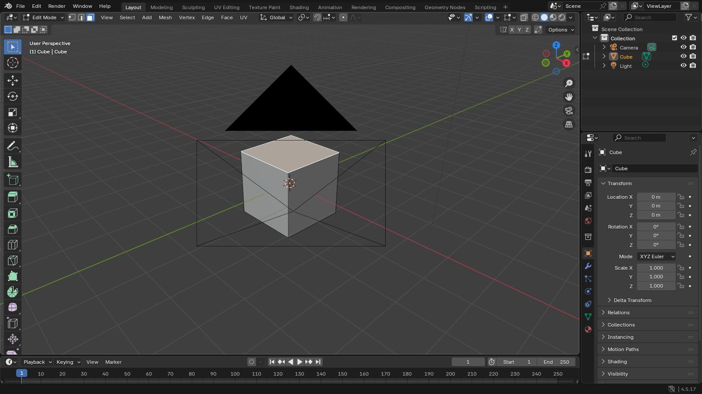
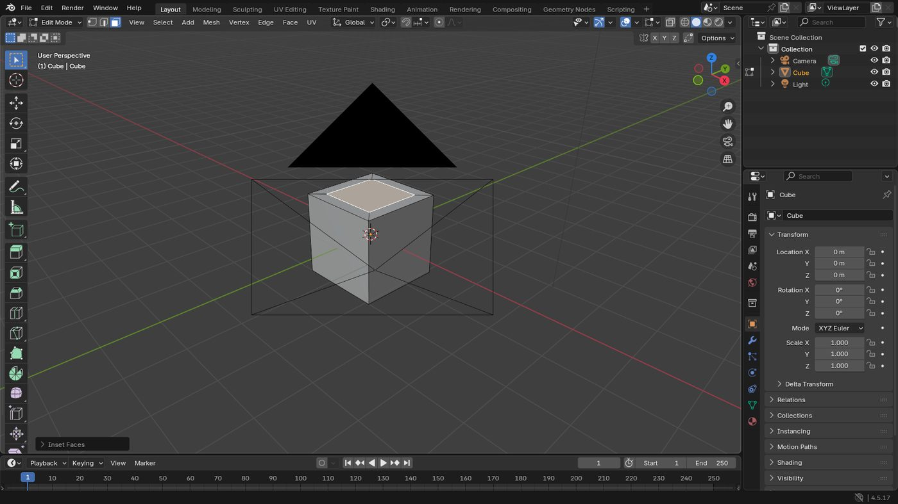
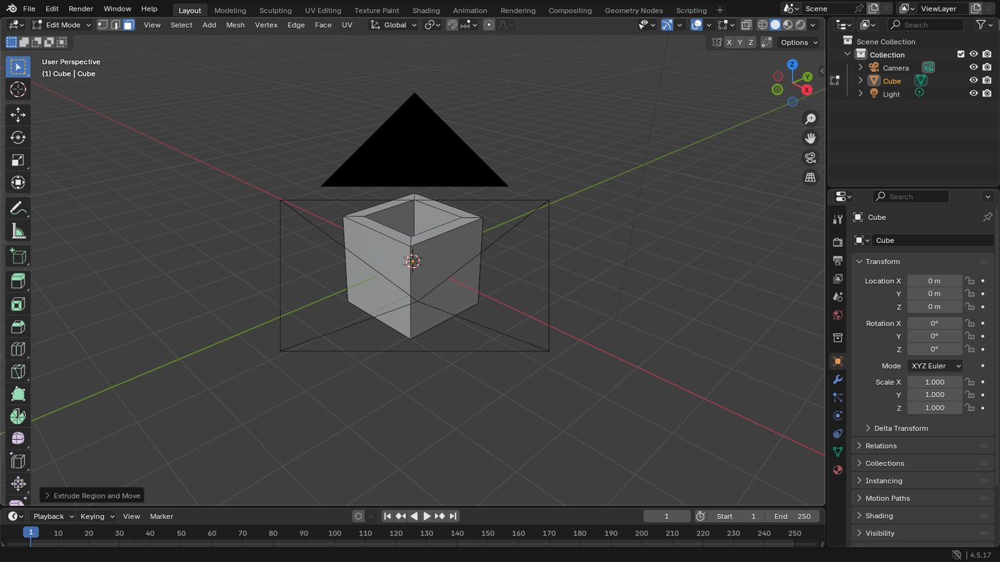
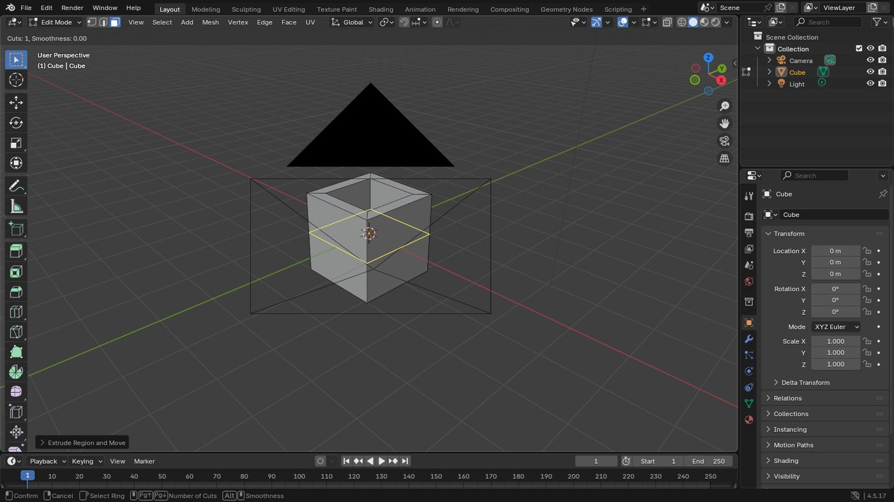
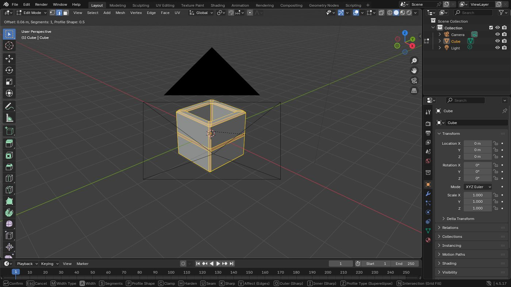
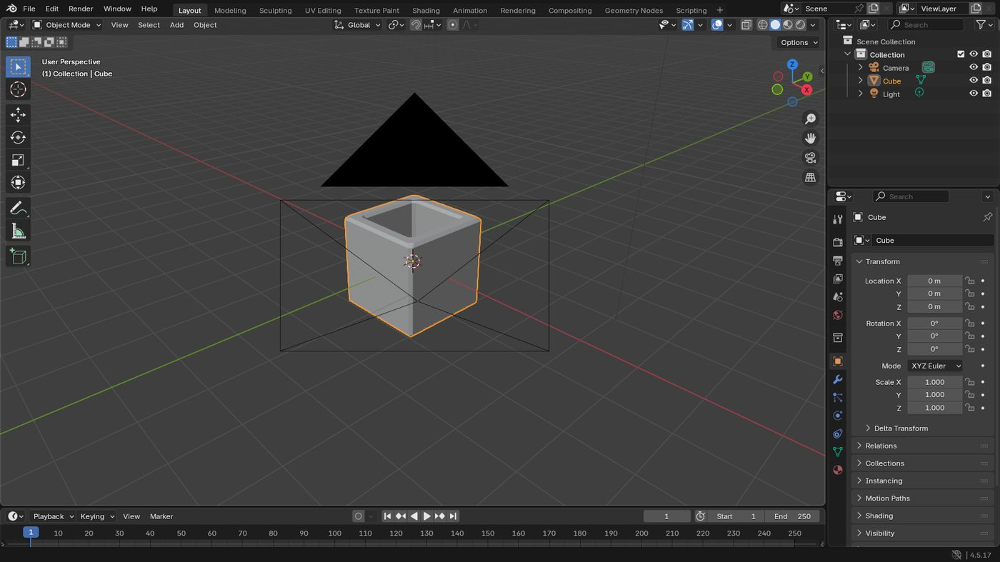

Lesson 3 of 8
Edit Mode: Building the Pot
From a cube to a plant pot with four tools: Inset, Extrude, Loop Cut and Bevel.
Start with the cube back in its original place (the last lesson ended by resetting it). Hover over the Viewport.
1. Enter Edit Mode and pick the top face
Press Tab to enter Edit Mode. Press 3 to work on Faces (1 is vertices, 2 is edges). Then left-click the top face of the cube. It turns orange.

2. Inset: a face inside the face
Press I, type 0.3, then Enter.

3. Extrude: push the face down
The inner face is still selected. Press E, type -1.5, then Enter. The face goes down into the cube and the hollow of the pot appears.

4. Loop Cut: a ring in the middle
Hover over a vertical edge on the side (in its middle) and press Ctrl + R. A yellow line appears going around the pot. Left-click once, then press Esc (or right-click) so the cut stays exactly in the middle.


5. Bevel: soften the edges
Press 2 for edge mode and A to select everything. Then press Ctrl + B, type 0.06, then Enter. All the edges are now smoothly chamfered.

Press Tab to go back to Object Mode. The pot is ready.

| Shortcut | What it does |
|---|---|
| Tab | Enter or leave Edit Mode |
| 1 2 3 | Vertices / edges / faces |
| I | Inset |
| E | Extrude |
| Ctrl + R | Loop Cut |
| Ctrl + B | Bevel |
| A / Alt + A | Select all / deselect all |
Exercise
Try an Inset of 0.5 instead of 0.3, and an Extrude of -1 instead of -1.5, and see how the wall thickness and depth of the pot change.